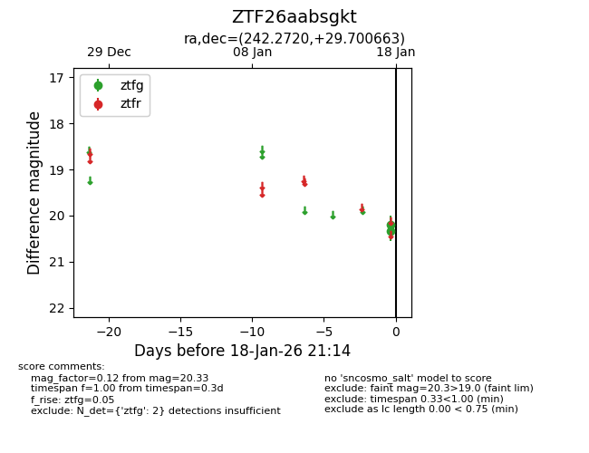
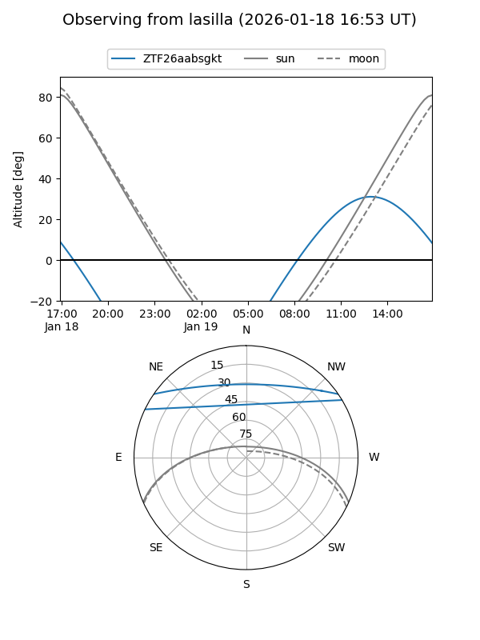
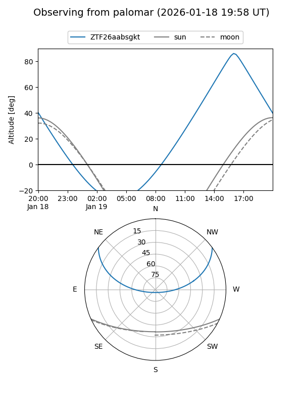

ZTF26aabsgkt
Target ZTF26aabsgkt at 2026-01-18 14:05
Aliases and brokers:
FINK: link
Lasair: link
ALeRCE: link
alt names
ZTF26aabsgkt (ztf,fink_ztf)
Coordinates:
equatorial (ra, dec) = 242.2720,+29.70066
equatorial (HMS+DMS) = 16:09:05.28,+29:42:02.39
galactic (l, b) = (48.4588,+46.79337)
Flags:
Photometry:
last ztfg=20.33
2 ztfg detections
Lightcurve

Visibility


Additional plots